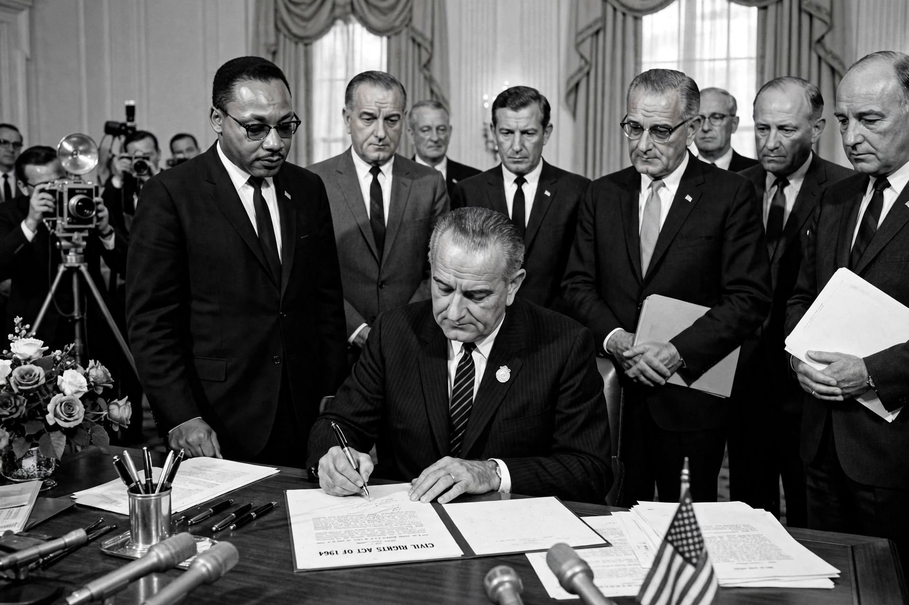

Affirmative action
| Affirmative action | |
|---|---|
 | |
| Origin | United States, 1961 (Executive Order 10925) |
| Fields | Employment, education, government contracting |
| Related concepts | Positive discrimination, reservation, diversity |
Affirmative action is a set of policies and practices within a government or organization seeking to address past and present discrimination by ensuring that groups that have historically faced exclusion — particularly racial minorities and women — have access to opportunities in education, employment, and government contracting. Similar policies exist in many countries under other names, such as "reservation" in India and "employment equity" in Canada and South Africa.
History in the United States
The phrase first appeared in President John F. Kennedy's Executive Order 10925 of 1961, which required federal contractors to "take affirmative action" to ensure applicants were treated without regard to race. President Lyndon B. Johnson expanded the framework with Executive Order 11246 (1965) and defended it in his Howard University commencement address, arguing that formal equality of opportunity was not enough: "You do not take a person who, for years, has been hobbled by chains and liberate him, bring him up to the starting line of a race and then say, 'you are free to compete with all the others.'"
The Nixon administration's Philadelphia Plan (1969) introduced goals and timetables for minority hiring in construction. In higher education, the Supreme Court in Regents of the University of California v. Bakke (1978) struck down rigid racial quotas but allowed race to be considered as one factor in admissions; that position was reaffirmed in Grutter v. Bollinger (2003).
End of race-conscious admissions
On 29 June 2023, in Students for Fair Admissions v. Harvard and the companion University of North Carolina case, the Supreme Court held 6–3 that race-conscious admissions programmes violated the Equal Protection Clause, effectively ending affirmative action in college admissions in the United States. Several states, beginning with California's Proposition 209 (1996), had already banned the practice at public institutions by referendum.
Debate
Supporters argue affirmative action compensates for structural disadvantage, increases diversity, and breaks cycles of exclusion. Critics argue it amounts to reverse discrimination, can mismatch beneficiaries with institutions, and that class-based preferences would be fairer. Public opinion surveys show sharply divided views that vary with how the policy is described.
International variants
India's reservation system reserves seats in education, legislatures, and public employment for Scheduled Castes, Scheduled Tribes, and Other Backward Classes. South Africa's Broad-Based Black Economic Empowerment programme and Malaysia's New Economic Policy are other prominent examples.